一、Transformer的整体结构
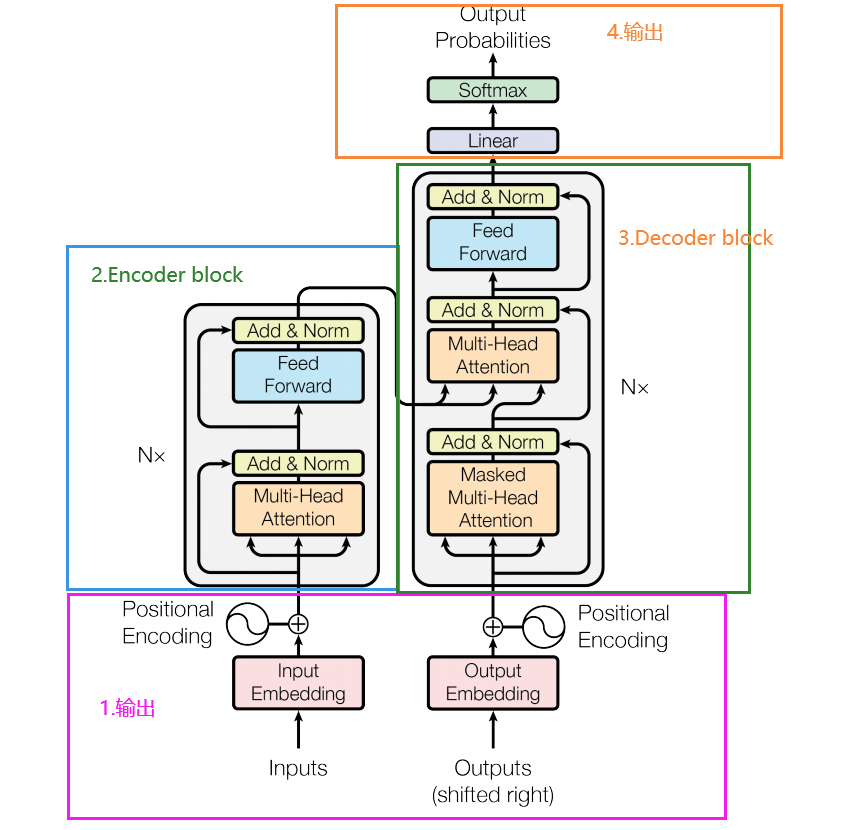
如上图所示：transformer由四个部分组成
（ 1.输入层：将词用比独热向量更好的方式转化为向量。将词的在序列中的位置信息纳入考量
（ 2.Encoder层
编码层由6个相同的层构成，每一层又包含两个子层
其中第一个子层是一个多头注意力机制，第二个子层是一个简单，位置完全连接的前馈网络
子层周围使用残差连接，然后进行层归一化（每个子层输出的是LayerNorm），其中子层(x)是由子层本身实现的函数。为了方便这些剩余的连接，模型中的所有子层以及嵌入层都会产生尺寸数据模型= 512的输出。
（ 3.Decoder层
解码层也是由6个相同的层构成，每一层包含三个子层
其中两个子层与编码层想通过，第三个子层增加了某种掩蔽，（to prevent positions from attending to subsequent positions）（ ensures that the
predictions for position i can depend only on the known outputs at positions less than i.）（对编码器堆栈的输出执行多头注意）子层周围使用残差连接，
（ 4.输出层
二、Attention
注意函数可以描述为将查询和一组键-值对映射到输出(mapping a query and a set of key-value pairs to an output)，其中查询、键、值和输出都是向量。输出计算为值的加权和，其中分配给每个值的权重由查询与相应键的兼容性函数计算。
目的是为了解决信息过长导致的信息丢失的问题。
Attention如何准确的将注意力放在关注的地方呢
1 | （1）对 RNN 的输出计算注意程度，通过计算最终时刻的向量与任意 i 时刻向量的权重，通过 softmax 计算出得到注意力偏向分数，如果对某一个序列特别注意，那么计算的偏向分数将会比较大。 |
1.Scaled Dot-Product Attention
输入由维度dk的查询和键，以及维度dv的值组成。计算包含所有键的查询的点积，然后将每个 key 除以√dk的 Json 函数，并应用 softmax 函数来获取值。
在实际应用中，我们同时计算一组查询上的注意函数，并被打包到一个矩阵q中。键和值也被打包到矩阵K和V中。我们将输出的矩阵计算为：
$$
\operatorname{Attention}(Q, K, V)=\operatorname{softmax}\left(\frac{Q K^T}{\sqrt{d_k}}\right) V
$$
对于dk的大值，点积的大小越来越大，将softmax函数推到具有极小梯度的区域。为了抵消这种效应，我们用√1 dk来缩放点积
将以上算法进行分解：
1 | import torch |
图解：
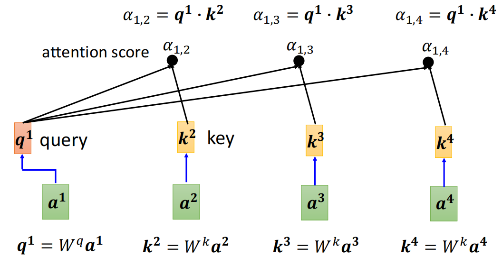
这张图中还有一个没有计算机就是计算k1 = wq*a1=>a11 = q1 *k1
这张图对应代码片段2，3
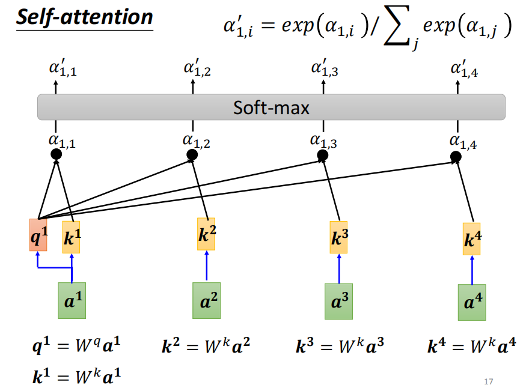
这张图的内容对应代码片顿5,6
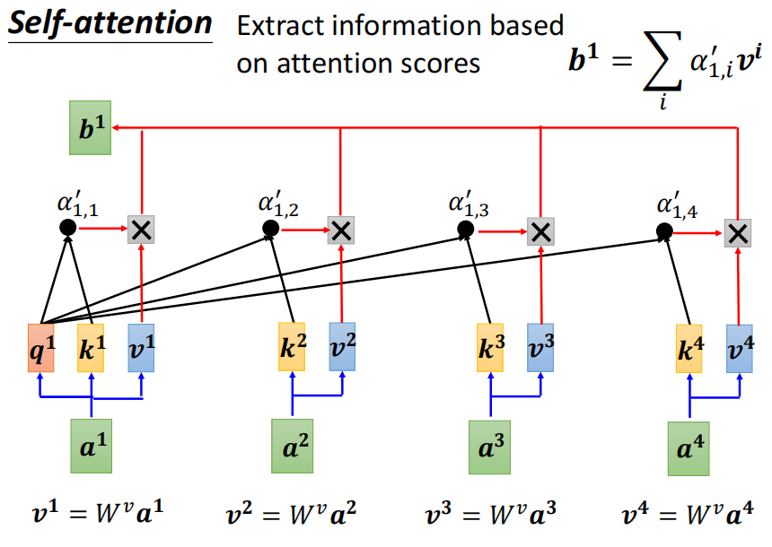
这张图对应代码片段7,8
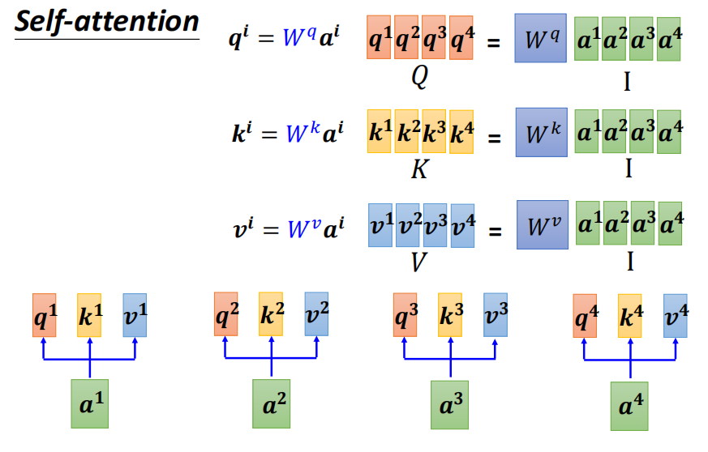
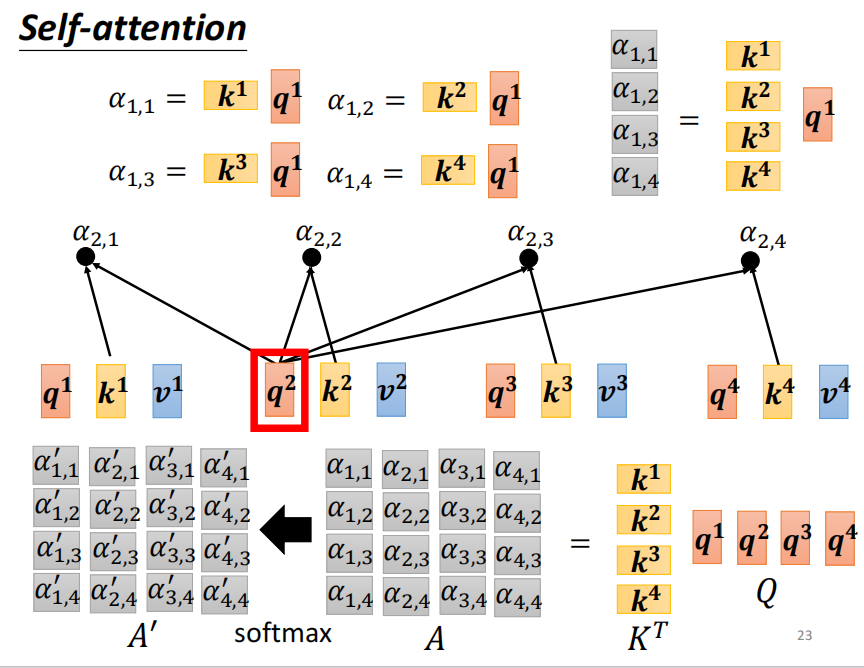
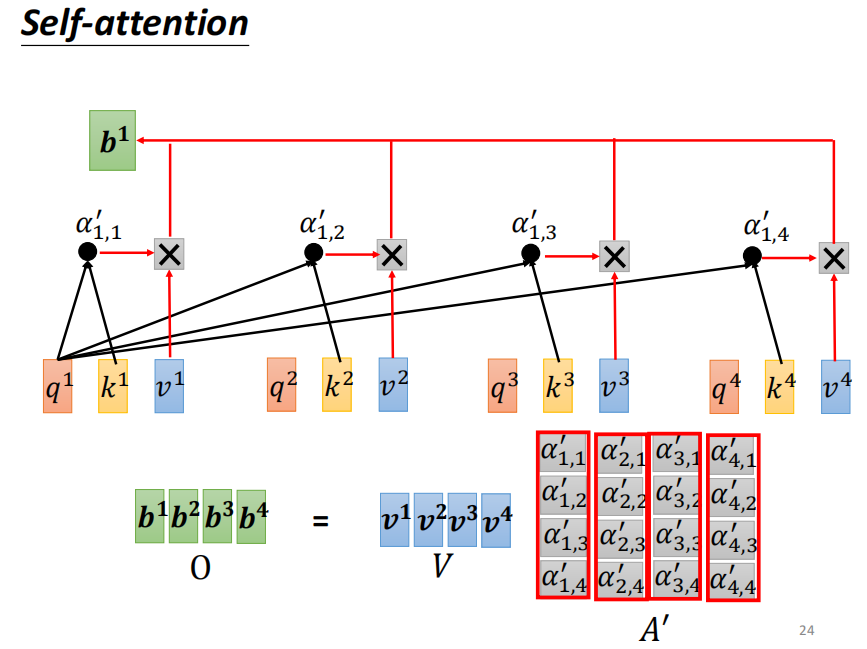
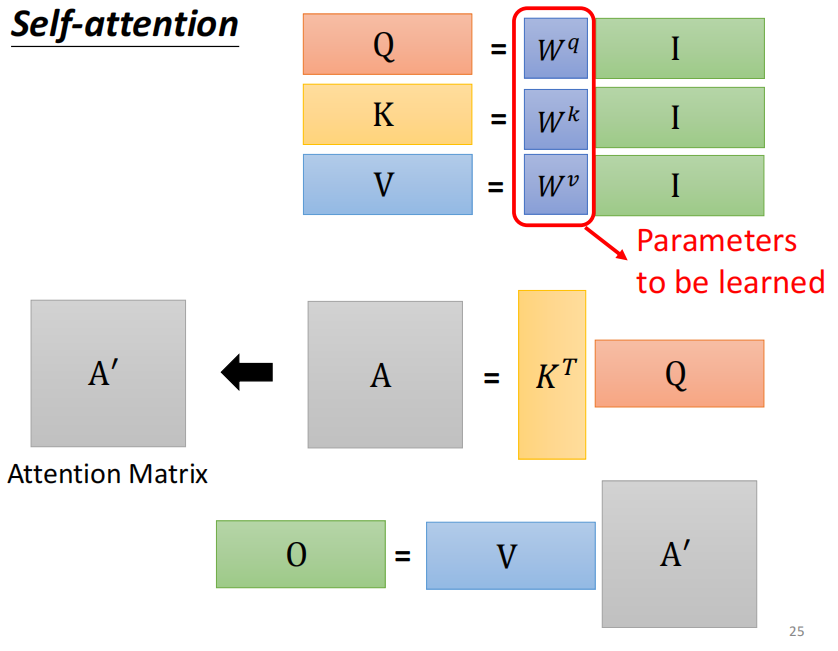
2.Multi-Head Attention
多头注意允许模型共同关注来自不同位置的不同表示子空间的信息
解释：因为 有好多人对 Attention 的看法不一样，那么我们就可以将这个任务给很多人一起做，最后争取大家共同的意见。
$$
\begin{aligned}
\operatorname{MultiHead}(Q, K, V) & =\operatorname{Concat}\left(\operatorname{head}1, \ldots, \text { head }{\mathrm{h}}\right) W^O \
\text { where head }{\mathrm{i}} & =\operatorname{Attention}\left(Q W_i^Q, K W_i^K, V W_i^V\right)
\end{aligned}
\
其中投影是参数矩阵W_i^Q \in \mathbb{R}^{d{\text {model }} \times d_k}, W_i^K \in \mathbb{R}^{d_{\text {model }} \times d_k}, W_i^V \in \mathbb{R}^{d_{\text {model }} \times d_v} and W^O \in \mathbb{R}^{h d_v \times d_{\text {model }}}
\
在这项工作中，我们使用了h=8平行的注意层。对于每一个模型，我么都是用d_k=d_v=d_{\text {model }} / h=64。
\
由于每个头部的维数降低，其总计算代价与权维的单头注意力相似
$$
Multi-Head Attention的计算过程：
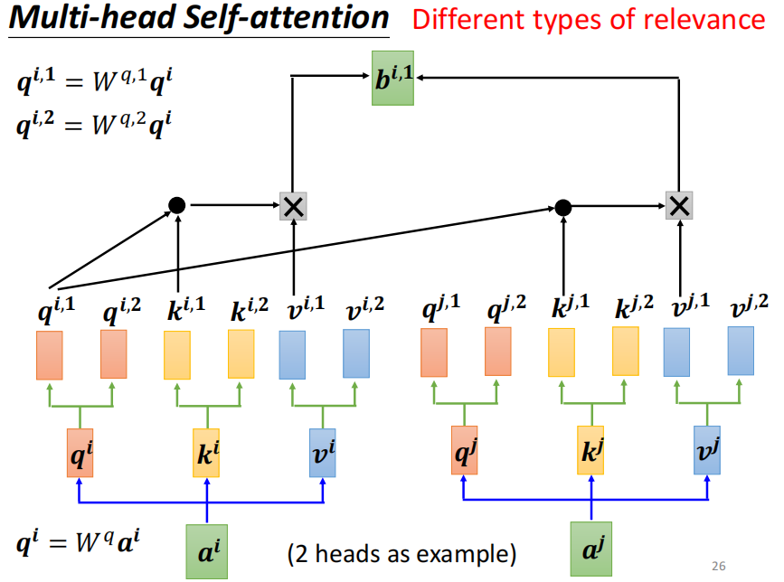
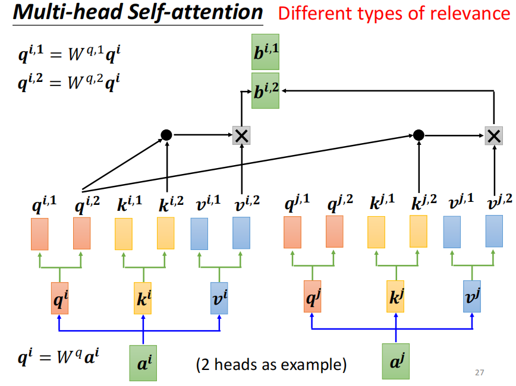
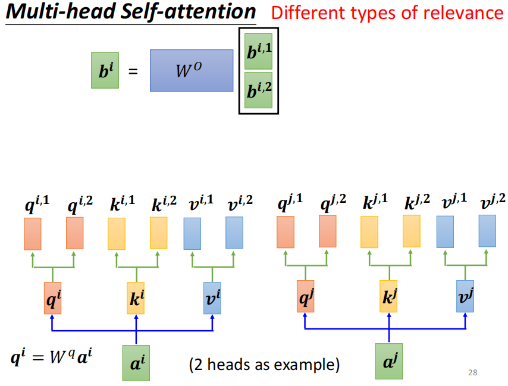
3.The Transformer uses multi-head attention in three different ways
（1）在“编码器-解码器注意”层中，查询来自上一个解码器层，内存密钥和值来自编码器的输出。这允许解码器中的每个位置都参与输入序列中的所有位置。
（2）该编码器包含自我注意层。在自注意层中，所有的键、值和查询都来自同一个位置，在这种情况下，是编码器中上一层的输出。编码器中的每个位置都可以处理编码器上一层中的所有位置。
（3）类似地，解码器中的自注意层允许解码器中的每个位置关注解码器中的所有位置，直到并包括该位置。我们需要防止解码器中的信息向左流，以保持自回归特性。我们通过屏蔽（设置为−∞）softmax输入中对应于非法连接的所有值来在缩放点积注意内部实现这一点。
4.Position-wise Feed-Forward Networks
除了编码器和解码器的内部子层外，编码器和解码器的每个层都包含一个完全相同的连接前馈网络，它分别和相同应用于每个位置。这由两个线性变换组成，中间有个ReLU激活。
$$
FFN(x) = max(0, xW_1 + b_1)W_2 + b_2
$$
虽然线性转换在不同的位置上是相同的，但它们每层都使用不同的参数。另一种描述它的方法是用核大小为1的两个卷积。输入和输出的维数为d= 512，内层的维数为d=2048。
5.Embeddings and Softmax
使用学习到的嵌入来将输入标记和输出标记转换为维数dmodel的向量。我们还使用通常的学习线性变换和softmax函数将解码器输出转换为预测的下一个令牌概率。在我们的模型中，我们在两个嵌入层之间共享相同的权重矩阵和前软最大线性变换。在嵌入层中，我们将这些权重乘以√ddodel
6.Positional Encoding
为了使模型利用序列的顺序，我们必须注入一些关于序列中标记的相对或绝对位置的信息。我们在编码器和解码器堆栈的底部的输入嵌入中添加“位置编码”
在这项工作中，我们使用不同频率的正弦和余弦函数：
$$
\begin{aligned}
P E_{(p o s, 2 i)} & =\sin \left(p o s / 10000^{2 i / d_{\text {model }}}\right) \
P E_{(p o s, 2 i+1)} & =\cos \left(\text { pos } / 10000^{2 i / d_{\text {model }}}\right)
\end{aligned}
$$
$$
其中pos是位置，i是维度。也就是说，位置编码的每个维度都对应于一个正弦曲线。\
波长形成了一个从2π到10000·2π的几何级数。\
我们选择这个函数是因为我们假设它允许模型容易地学习相对位置，\
因为对于任何固定的偏移量+， P E_{\text {pos+k}}可以表示为P E_{\text {pos }}的线性函数。
$$
选择这种sin函数有两种好处：
（1）可以不用训练，直接编码即可，而且不管什么长度，都能直接得到编码结果；
（2）能表示相对位置，根据sin(α+β)=sinαcosβ+cosαsinβ，PE（pos+k）可以表示为PE（pos）的线性变换，这为表达相对位置信息提供了可能性。
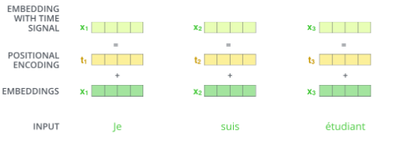
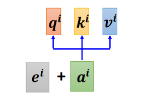
Transformer为每个输入的词嵌入添加了一个向量，这样能够更好的表达词与词之间的关系。词嵌入与位置编码相加，而不是拼接，他们的效率差不多，但是拼接的话维度会变大，所以不考虑。
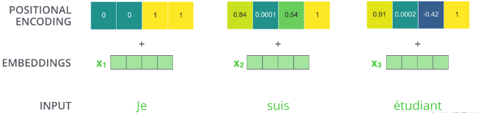
三、Encoder层
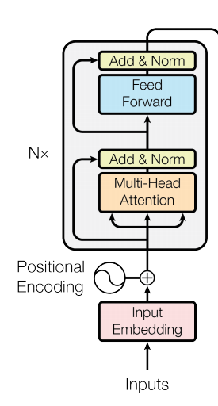
编码器（Encoder）：给一个向量，输出一个同样长度的向量
编码器分成六个block（并不等同于神经网络的层，此处的每个block应为神经网络的多个层）
block的工作流程为：输入vector=》Self-attention=》out1_vector=》FC（全连接层-Fully Connected Layer）=》out2_vector
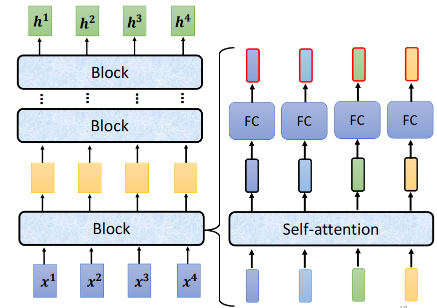
在Transformer的原始论文中更详细（复杂）的block中的处理流程（如下图）：
图中的Residual+Layer norm就是Encoder结构图中的Add&Norm（对应于图中Self-attention以上的部分）。这个结构的作用就是进啊多头注意力的输出加上原始输入，然后将所有经过残差的向量全部加和，最后对加和后的向量进行层归一化。层归一化的作用就是计算输入向量的均值和标准差，对同一特征同一个样本的不同维度计算标准差。
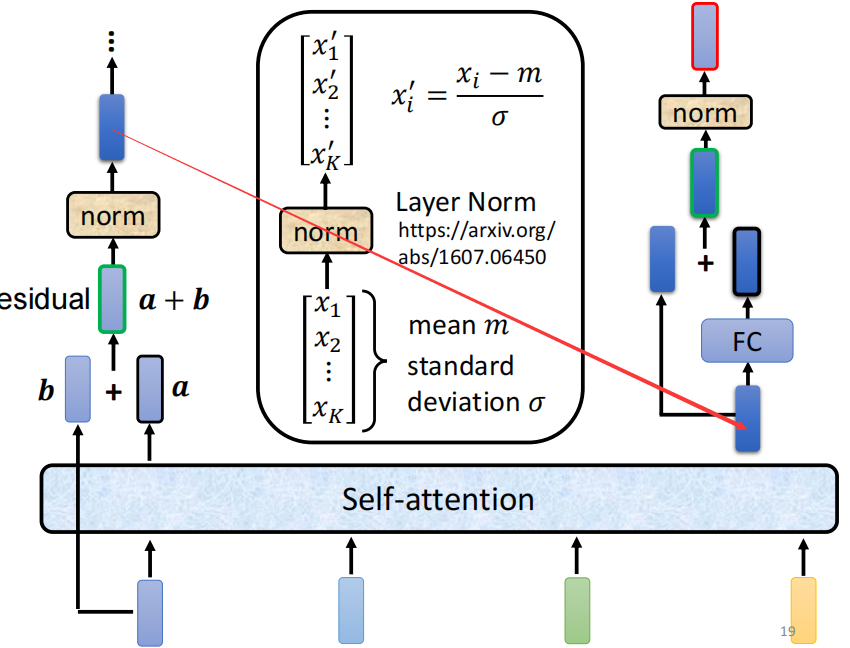
四、Decoder层
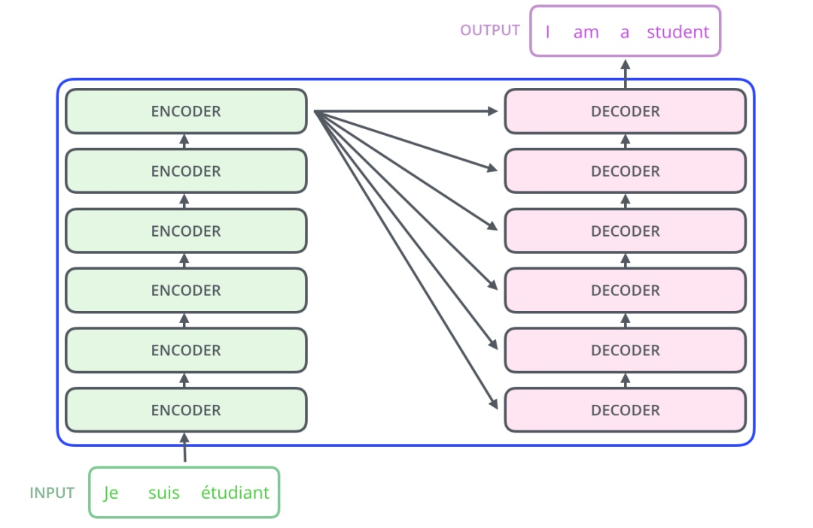
上图是原始Transformer论文中提到的机构，但是根据实际情况可以对部分结构进行修改，如下面几种结构
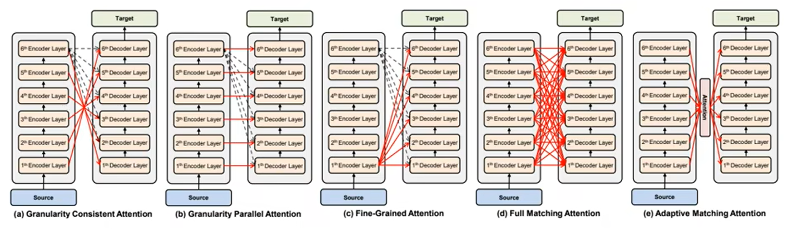
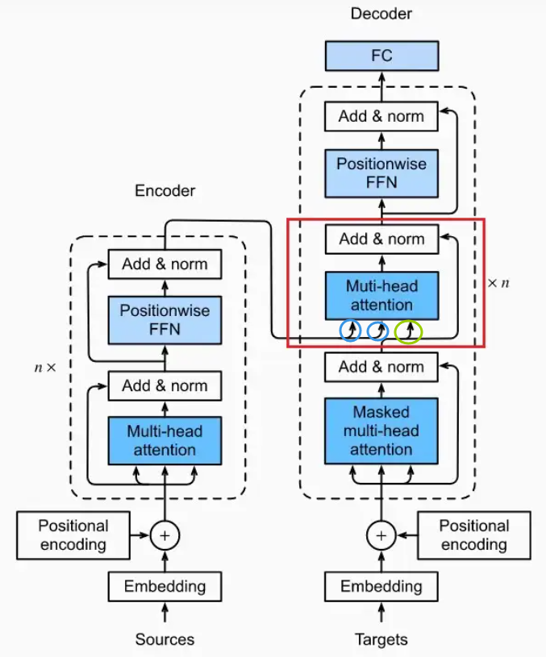
上图中的红色框图部分被称为Cross attention
其中蓝色圆圈内是读取Encoder的输出，实际运作过程如下图所示：
左边绿色框图部分为Encoder的输出，右边红色框图部分是Decoder的每一个block最底部的Masked Multi-Head Attention+Add&Norm的输出。
将Encoder的输出和Decoder前面的输出共同输入编码器-解码器注意力机制（三要素如下）
- Key：从Encoder的输出中计算
- Value：从Encoder的输出中计算
- Query：从Decoder之前的输出中计算
处理的过大致是从Decoder的前期输出计算出query，对Encoder的每一个输出我们计算一个key-value对；然后将这个query和每一个key进行内积，计算出与key-value对个数相同的注意力权重；接着，我们使用注意力权重对value加权求和；最后，将加权和经过全连接层得到这一个模块的输出
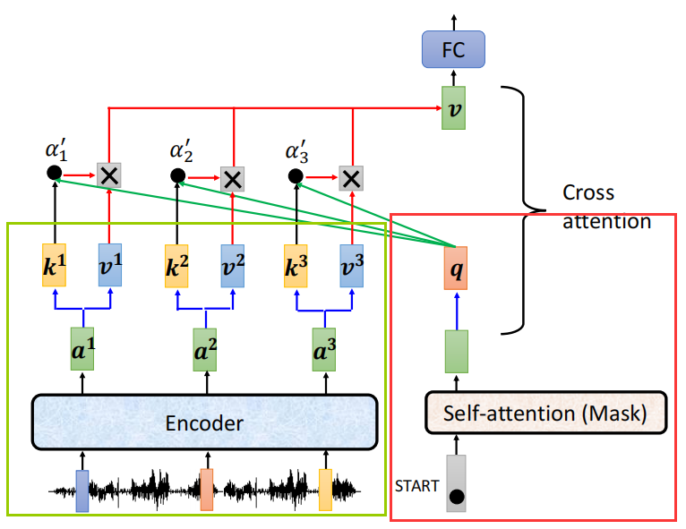
在训练阶段，其输出序列的所有位置（时间步）的标记都是已知的；然而，在预测阶段，其输出序列的标记是逐个生成的。因此，在任何解码器时间步中，只有生成的标记才能用于解码器的自注意力计算中。
在Decoder的结构中每个block只能够的Masked Multi-Head Attention是对原来的Multi-Head Attention进行了一些改造，主要改变的结构如下：
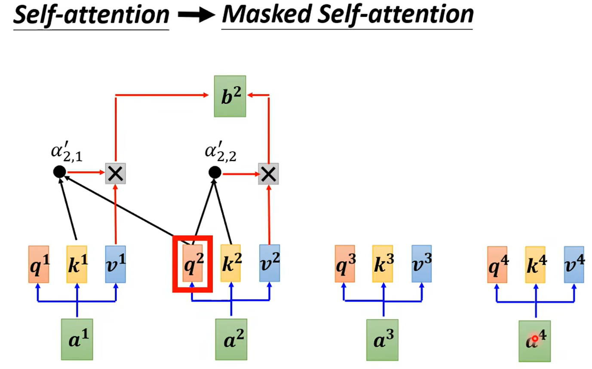
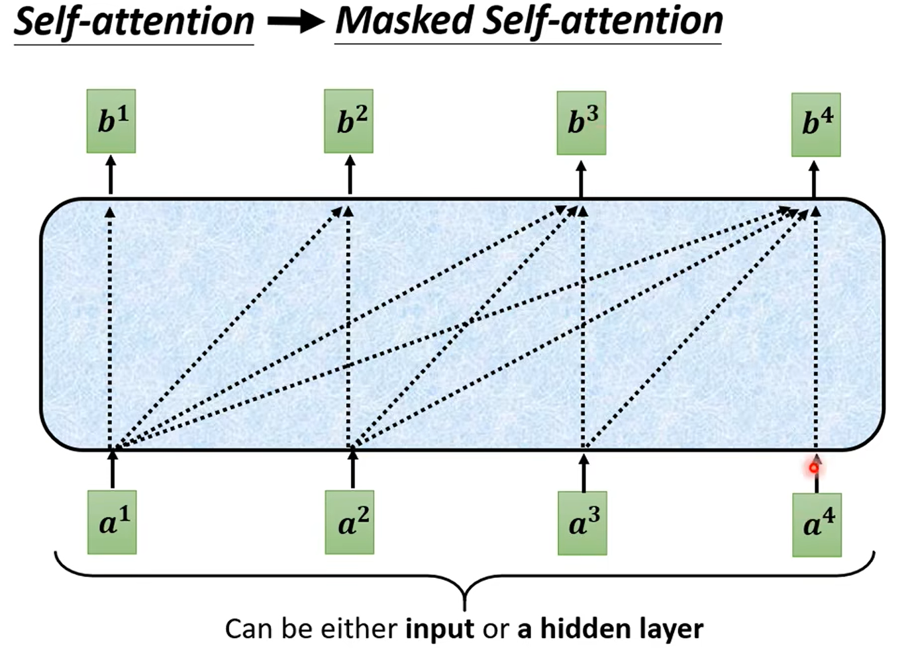
五、补充
1.Encoder-Decoder 的由来
编码器-解码器是深度学习中常见的模型架构，很多常见的应用都是利用编码-解码框架设计的。
encoder-decoder并不是一个具体的模型，而是一个通用的框架。Encoder 和 Decoder 部分可以是任意文字，语音，图像，视频数据，模型可以是 CNN，RNN，LSTM，GRU，Attention 等等。所以，基于 Encoder-Decoder，我们可以设计出各种各样的模型。
上面提到的编码，就是将输入序列转化转化成一个固定长度向量。解码，就是讲之前生成的固定向量再转化出输出序列。
两点需要注意：
- 不管输入序列和输出序列长度是什么，中间的「向量 c」长度都是固定的，这也是它的一个缺陷。
- 不同的任务可以选择不同的编码器和解码器
ncoder-Decoder 有一个比较显著的特征就是它是一个 End-to-End 的学习算法，以机器翻译为力，可以将法语翻译成英语。这样的模型也可以叫做 Seq2Seq。
2.Seq2Seq
Sequence-to-sequence：输入一个序列，输出另一个序列。
这种结构最重要的地方在于输入序列和输出序列的长度可以不变
Seq2Seq 强调目的，不特指具体方法，满足输入序列，输出序列的目的，都可以统称为 Seq2Seq 模型。Seq2Seq 使用的具体方法基本都是属于 Encoder-Decoder 模型的范畴。
在训练数据集中，我们可以在每个句子后附特殊字符 ”“ (end of sequence) 以表示序列终止，每个句子前用到了特殊字符 “” (begin of seqence) 表示序列开始。Encoder 在最终时间步的隐状态作为输入句子表征和编码信息。Decoder 在各个时间步中使用输入句子的编码信息和上一个时间步的输出以及隐藏状态作为输入。